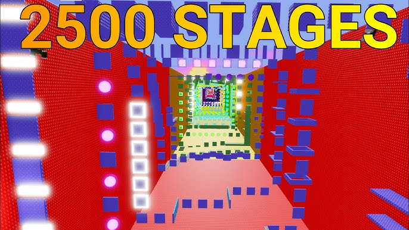
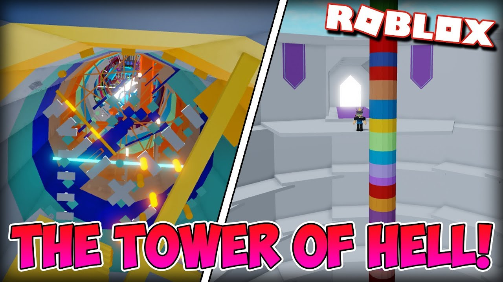

1st place: youtube simulator
YouTube Simulator Z is an idle clicker game where you film with a camera,
edit it on a computer, earn subscribers and money to buy better equipment.
You can increase your income with special plaques, and when you buy the last camera on each floor,
you can rebirth and get super powerful tokens.
2nd place:effortless stage tower
Effortless Stage Tower is a very long-term platform game that offers more than 5,000 stages.
In each stage, the player must pass a short obstacle course to advance to the next stage,
and every 500 levels cleared, the player can move to a new tower.
(WARNING: Stage 3400-3500 is HELL!)

3rd place: tower of hell
Tower of Hell is a high-speed platform game where the world's best players compete for the best obby player.
Each round, the tower is randomly generated and players are given 7 minutes to climb.
Remember! Every time one person completes the tower, the remaining timer goes twice faster!

Obby Royale is a competitive platform game similar to Tower of Hell, but with a slightly different twist.
Each round has 12 players, each stage has random obstacles, and the slowest personal time is eliminated.
Be the last survivor and win!
5th place:sol's rng
Do you think you're lucky? Then try this game!
In Sol's rng, you can get various cool auras depending on your luck!
If you get an aura of 1/1000 or less, the screen will black out,
and if it's 1/10,000 or less, a star will appear!
If it's 1/100,000 or less, the screen will break,
and if it's 1/1,000,000 or less... Pick it yourself and see! By the way, the rarest aura is 1/3.3 billion!
6th place:pet simulator 99
If you like cute pets, we recommend you Pet simulator 99!
Cute pets pulled from various eggs will break coin boxes for you to earn money!
Discover over 200 different areas and get new pets!
If you're lucky, you can get an exotic Huge pet!
7th place:tycoon rng
Tycoon RNG is a tycoon game, but it is a unique tycoon game where you can buy better machines with your luck.
You can get various generators and upgrades by clicking the
button.
If you run the tycoon while considering the compatibility between different ores, you can make money faster.
8th place:speedrun 4
Speedrun 4 is a racing game that involves running through various maps at a very fast speed.
30 challenges await you, from very easy to very difficult.
After playing just 3 rounds, you will be hooked on this game.
9th place:bedwars
Bedwars is a battle game between 4 teams of 4 players.
However, this game has a unique mechanic called 'beds'.
As long as each team's bed exists, players can respawn indefinitely.
However, the moment a team's bed is destroyed, all players on that team will have their last life.
You have to protect your beds to win, right?
10th place:blade ball
Blade ball is a dodgeball game where you hit balls with a sword to eliminate your opponents.
A ball is created each round, and if you hit a ball that is headed towards you, the ball will fly to the closest person.
The ball will get faster and faster, and if you fail to hit a ball that is headed towards you, you will be eliminated.
Become the last survivor with the strongest skill!